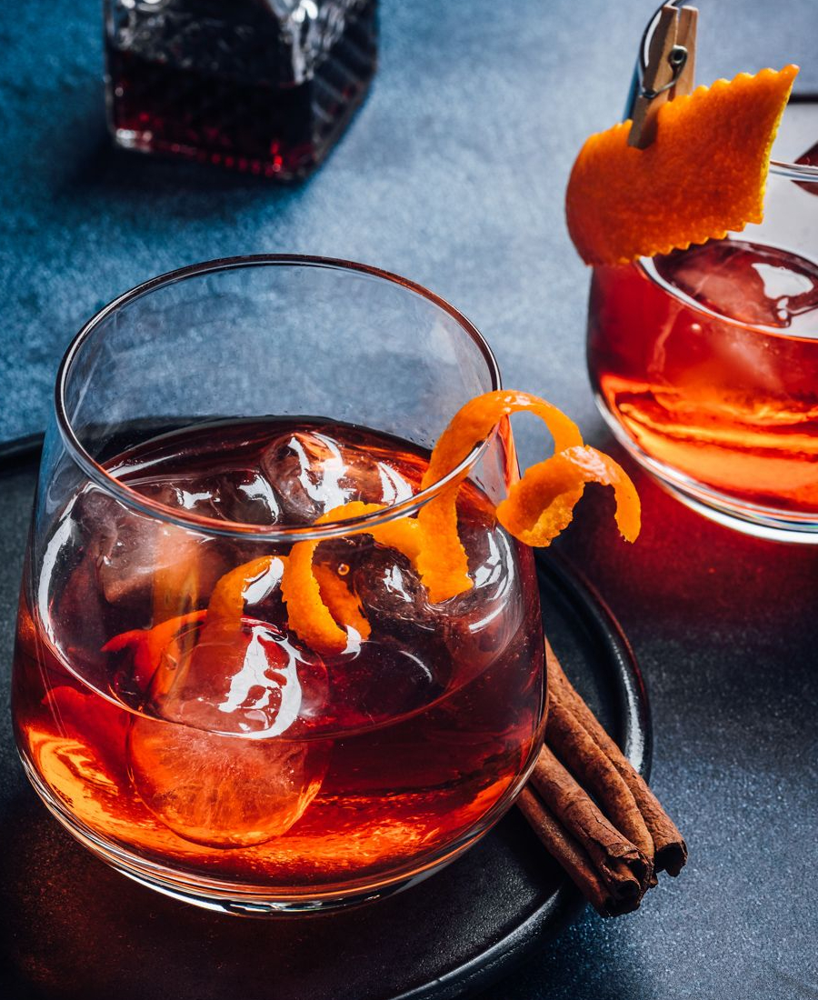

Negroni

Ingredientes:
30 ml de gin
30 ml de Campari
30 ml de vermute tinto (doce)
Gelo
Casca de laranja para decorar
Modo de preparo:
Encha um copo baixo com gelo para resfriá-lo.
Adicione o gin, o Campari e o vermute tinto no copo.
Mexa suavemente os ingredientes com uma colher de bar por cerca de 20 a 30 segundos para misturar bem e resfriar a bebida.
Usando uma peneira, despeje o coquetel em um copo de servir.
Decore o coquetel com uma casca de laranja torcida sobre a bebida para liberar os óleos cítricos.
Sirva imediatamente e aproveite seu Negroni!
O Negroni é um coquetel clássico de sabor amargo e equilibrado. Se preferir uma variação mais suave, você pode ajustar as
quantidades dos ingredientes de acordo com seu gosto pessoal. Experimente e personalize o seu Negroni para encontrar o
equilíbrio perfeito para você. Saúde!